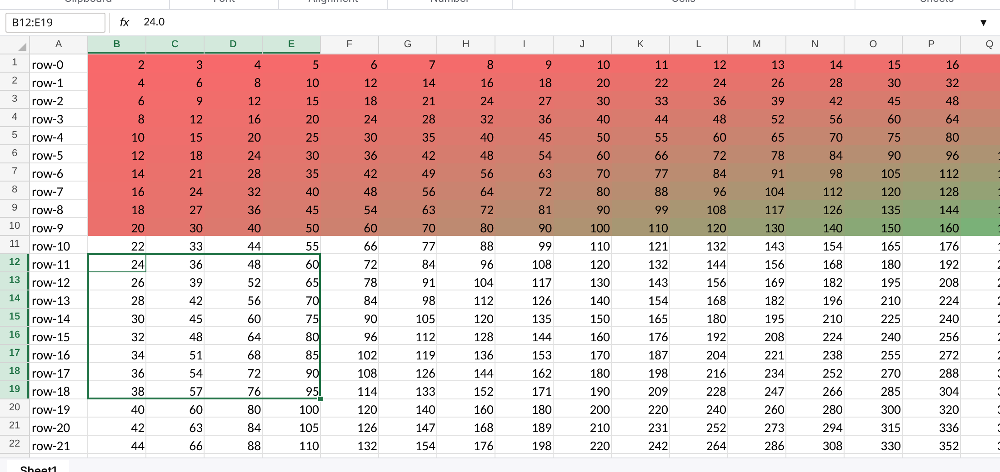
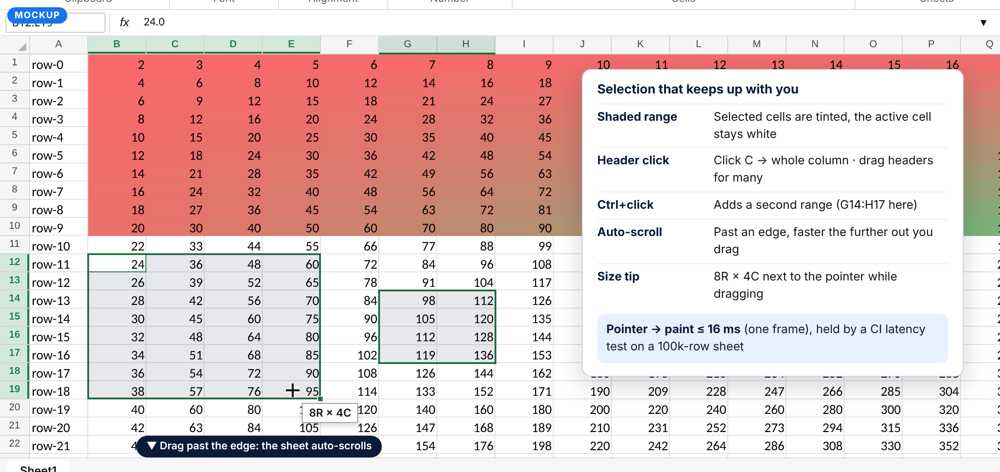
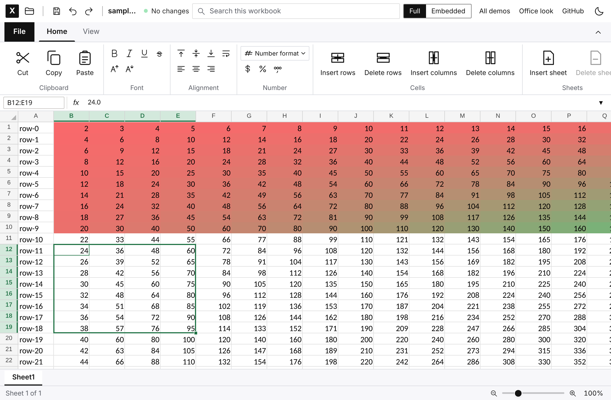
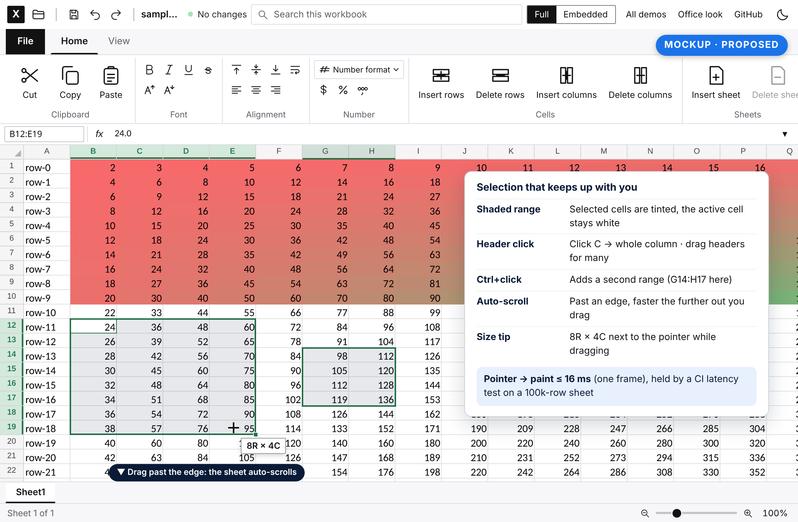

Range selection that keeps up with your mouse, like Excel
Building: draft PR #625 open (agy lane, branch agy/612-range-select, opened 2026-11-24 4:28 PM ET); awaits HoP review.
Approve: tap 👍 on the issue · Decline: tap 👎
Close-up of the change




Full screen


Today (B12:E19 dragged): the range gets an outline but no shading. Clicking a column or row header does not select it, dragging past the bottom edge does not auto-scroll, and there is no size tip or Ctrl+click second range.


Mockup: a shaded range with the active cell left white, a second Ctrl+click range (G14:H17), a size tip (8R × 4C) at the pointer, edge auto-scroll, and header click to select whole columns or rows. A CI test holds pointer-to-paint to one frame.
Tap an image to open it full size.
Why
Jared's comment on #606: range selection feels less responsive than Excel, as in many open-source editors, and it is a part of the experience he wants Nitro to do really well. Selecting is the first step of almost every Excel action (format, chart, sum, copy). Excel and Google Sheets shade the range, select whole columns and rows from the headers, auto-scroll at the edges and paint on the next frame. Light probe on main ee9789c: header click and edge auto-scroll do nothing today; drag, Shift+click, Shift+Arrow and Ctrl+A already work.
Definition of done
- Dragging, Shift+click and Shift+Arrow paint a shaded range (active cell white) and update the Name Box on the next animation frame; a Playwright trace test on a 100k-row sheet holds pointer-to-paint p95 ≤ 16 ms at 1×–4× CPU throttle.
- Clicking a column or row header selects it; dragging across headers or Shift+clicking selects many; the corner button and Ctrl+A select all.
- Dragging past any edge auto-scrolls, faster the further the pointer goes, and stops when the pointer comes back inside.
- Ctrl/Cmd+click and Ctrl+drag add ranges; Clear, Bold, number formats and copy apply to every range; getSelection reports all ranges.
- A size tip (for example 8R × 4C) follows the pointer while dragging; Font, Alignment and Number groups stay at two rows; bundle-budget and all required checks green.
Approve: tap 👍 on the issue · Decline: tap 👎